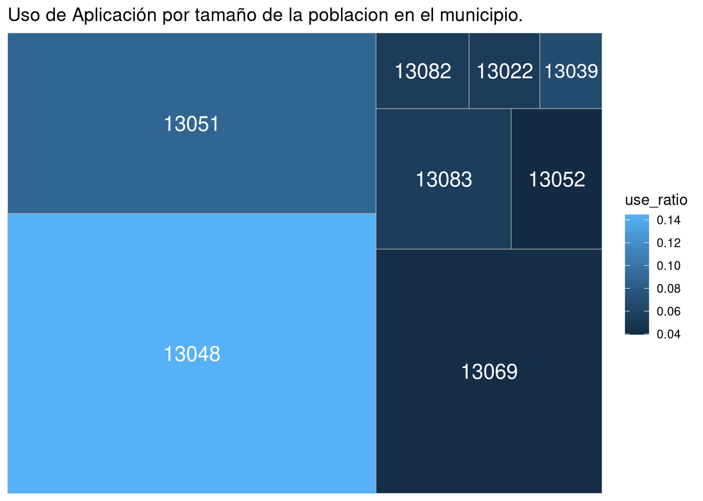
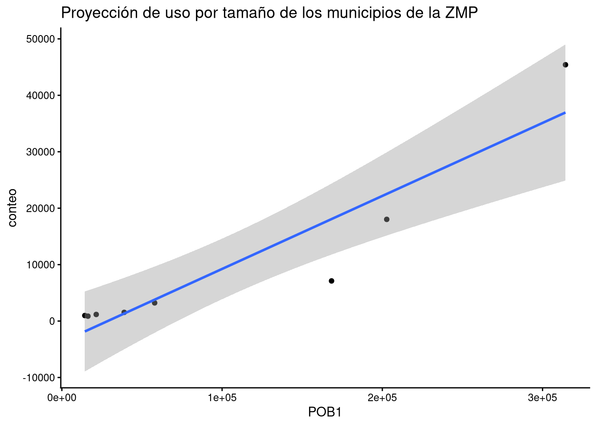
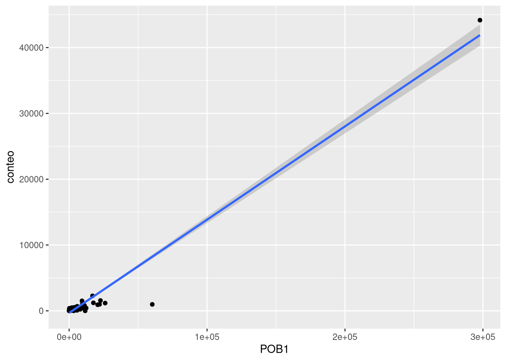

1 Análisis de usos respecto a la población por AGEBs
Para este análisis se calcula la correlación entre los datos de población en el estado de Pachuca con una estimación de la posible vivienda de una persona a partir de datos anónimos de una aplicación de viajes.
library(dplyr) #Manejo de datos
Adjuntando el paquete: 'dplyr'
The following objects are masked from 'package:stats':
filter, lag
The following objects are masked from 'package:base':
intersect, setdiff, setequal, union
library(ggplot2) #Graficos avanzadoslibrary(treemapify) #Para treemaplibrary(tmap) # Para graficar los mapas de la region
2 Limpieza de datos
Con CVEGEO y población Censal. Se estima con población rural de localidades
Se estudia la correlación entre el nivel de uso del servicio y el tamaño de la población de acuerdo a 3 filtros principales, un análisis global entre los datos sin ningun filtro, organizados por localidad y por municipio.
Hacemos un Treemap de acuerdo al tamaño de la poblacion con la tasa de usos
ggplot(conteo_municipio, aes(area = POB1, fill = use_ratio,label=prefijo)) +geom_treemap() +geom_treemap_text(colour ="white",place ="centre",size =15) +ggtitle("Uso de Aplicación por tamaño de la poblacion en el municipio.")

Realizamos un modelo lineal para visualizar el uso de aplicación por tamaño de la población
ggplot(conteo_municipio,aes(x = POB1, y = conteo)) +geom_point() +geom_smooth(method ="lm") +theme_classic() +ggtitle("Proyección de uso por tamaño de los municipios de la ZMP")
`geom_smooth()` using formula = 'y ~ x'

Similarmente podemos aplicar un modelo lineal sobre la población medida por localidades
ggplot(conteo_localidad,aes(x = POB1, y = conteo)) +geom_point() +geom_smooth(method ="lm")
`geom_smooth()` using formula = 'y ~ x'

Por ultimo, nos interesa saber cual es la correlación asociada a cada uno de los municipios medido de acuerdo a sus localidades.
# Correlación asociada a cada municipio de acuerdo a sus localidadesconteo_localidad <- conteo_usuarios_ageb %>%group_by(CVE_MUN) %>%mutate( correlacion =cor(conteo, POB1, method ="s", use ="pairwise.complete.obs"))# Extrae la correlacion asociada al municipio con su clave unica para unirlo al mapacorrs_municipio <- conteo_localidad %>%select(CVE_MUN,correlacion)
3.3 Carga de archivos geográficos
Mediante la libreria tmap realizamos la carga de un archivo extensión .shp
#Leer un vectorial con geometríalimite_municipal=sf::st_read("../inputs/cartografia/municipiosjair.shp") #es importante seleccionar el de extensión .shp
Reading layer `municipiosjair' from data source
`/home/bartio/Git/OD_GPS/inputs/cartografia/municipiosjair.shp'
using driver `ESRI Shapefile'
Simple feature collection with 84 features and 9 fields
Geometry type: MULTIPOLYGON
Dimension: XY
Bounding box: xmin: -99.85954 ymin: 19.59776 xmax: -97.98493 ymax: 21.39852
Geodetic CRS: WGS 84
#Creacionn del mapa, añadimos la correlación asociada a cada municipiomapa_correlaciones <- limite_municipal %>%right_join(corrs_municipio, by="CVE_MUN") %>%filter(!is.na(correlacion))tmap::tm_shape(mapa_correlaciones) +tm_polygons(col ="correlacion", midpoint =0, n=3 )
[v3->v4] `tm_tm_polygons()`: migrate the argument(s) related to the scale of
the visual variable `fill` namely 'n', 'midpoint' to fill.scale =
tm_scale(<HERE>).
ℹ For small multiples, specify a 'tm_scale_' for each multiple, and put them in
a list: 'fill.scale = list(<scale1>, <scale2>, ...)'
[v3->v4] `tm_polygons()`: use 'fill' for the fill color of polygons/symbols
(instead of 'col'), and 'col' for the outlines (instead of 'border.col').